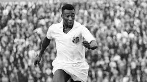

Edson Arantes do Nascimento

Biografia de Edson Arantes do Nascimento
Linha do tempo
1940 No dia 23 de outubro de 1940 nasce pele.
7 de setembro de 1956 pele começa a jogar bolla pela primeira vez
Pelé começou a jogar pelo Santos Futebol Clube aos quinze anos de idade, e pela Seleção Brasileira aos dezesseis. Durante sua carreira na Amarelinha, sagrou-se campeão de três edições da Copa do Mundo FIFA: 1958, 1962 e 1970, sendo o único a fazê-lo como jogador.
2014 Em 2014, muitos anos após a aposentadoria do rei do futebol, a France Football revisou a premiação desde sua criação e considerando as atuais regras do prêmio, deu a Pelé sete troféus de Melhor do Mundo. Enquanto Messi, até agora, conquistou seis prêmios....
Pelé tem sete filhos. Edson Cholbi Nascimento, Sandra Regina Nascimento, Joshua Nascimento, Flavia Christina Nascimento, Kelly Cristina Nascimento, Celeste Nascimento e Jennifer Nascimento...
1835 Se casou com William King
1837 Ada e Babbage testaram o primeiro programa de computador do mundo, sendo Ada a
desenvolvedora
do primeiro algorítimo de todos.
1838Pelé teve três casamentos,
casou em 1966 com Rosimeri dos Reis, com quem ficou casado até 1978. Em 1994, casou com Assíria Nascimento, e se separou em 2008. Atualmente está casado com Márcia Aoki, desde 2016....
1977 O último jogo de Pelé foi dia primeiro de outubro de 1977, jogando pelo New York. Pelé se aposentou e fez sua última partida da carreira em um jogo entre New York Cosmos e Santos.
O jogador tinha 37 anos.... - Veja mais em
2023pelé veio a obito por conta cancer no rin